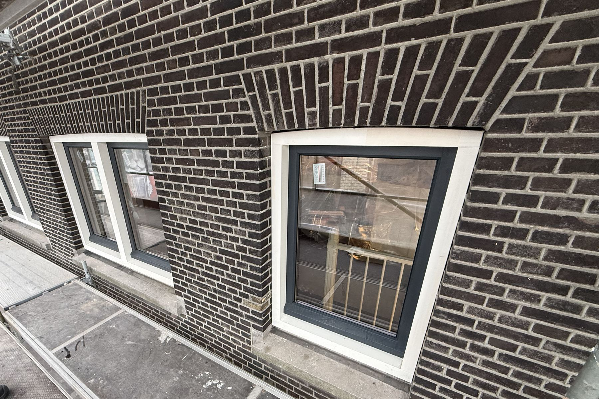
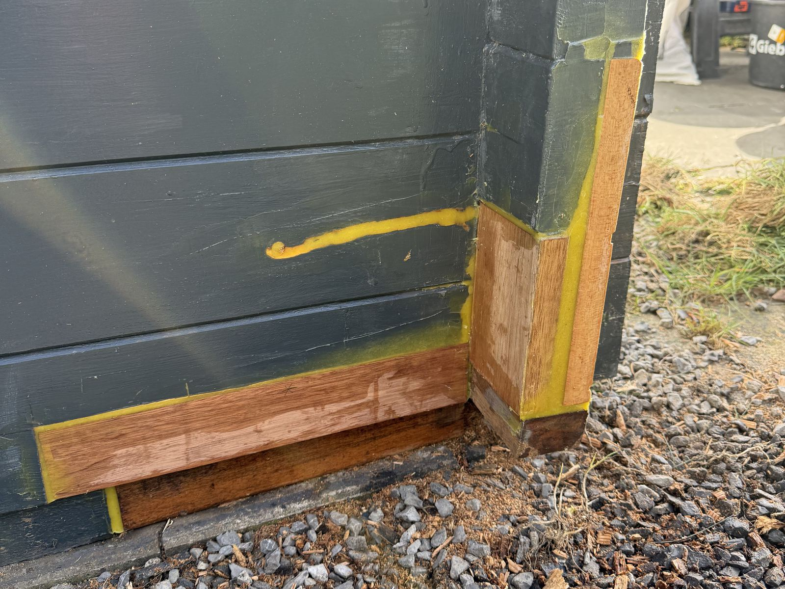
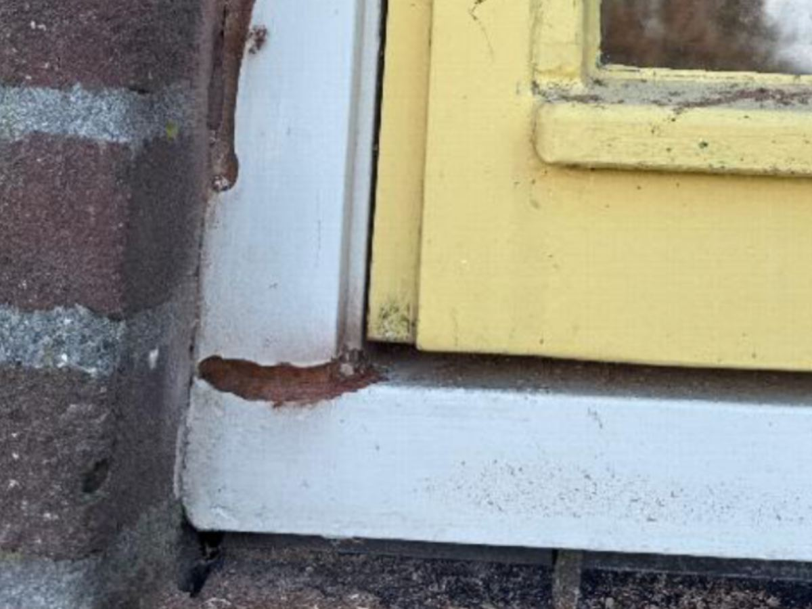
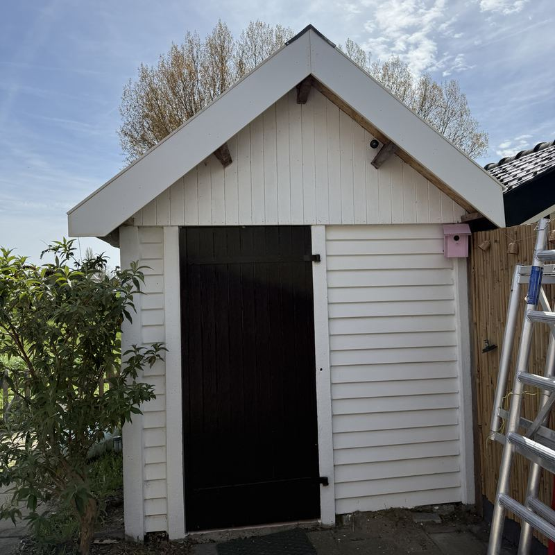
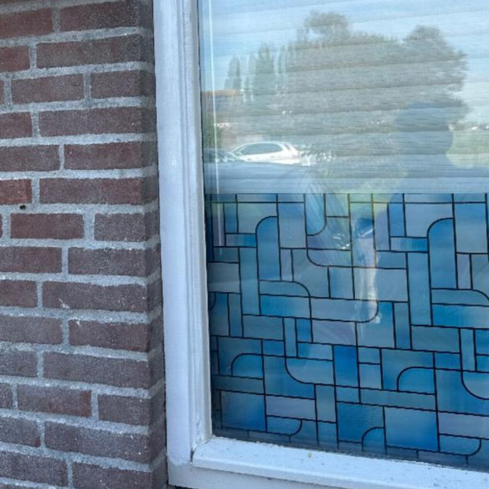
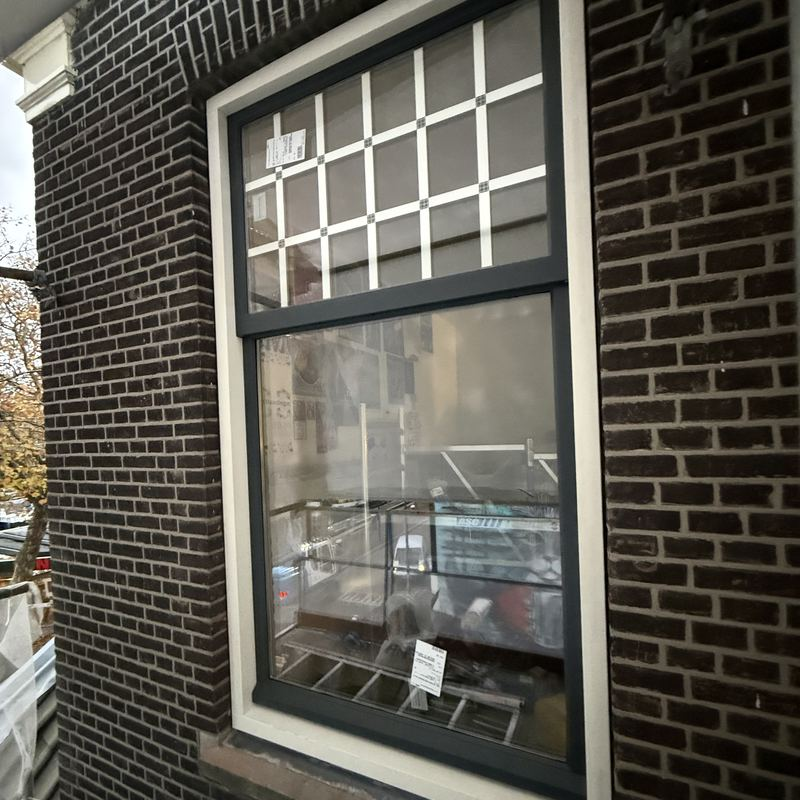
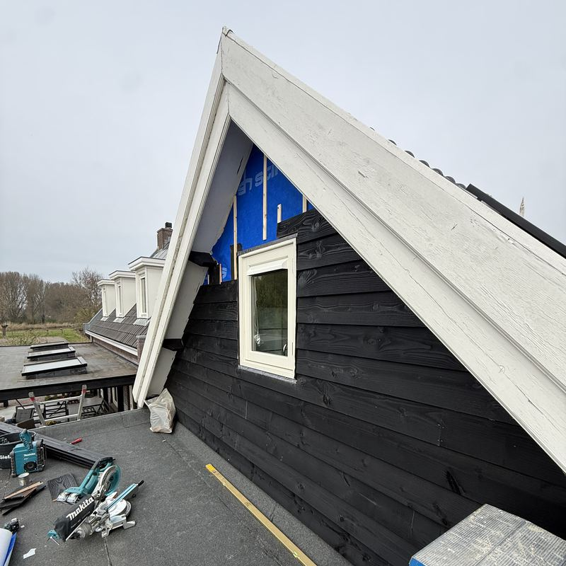
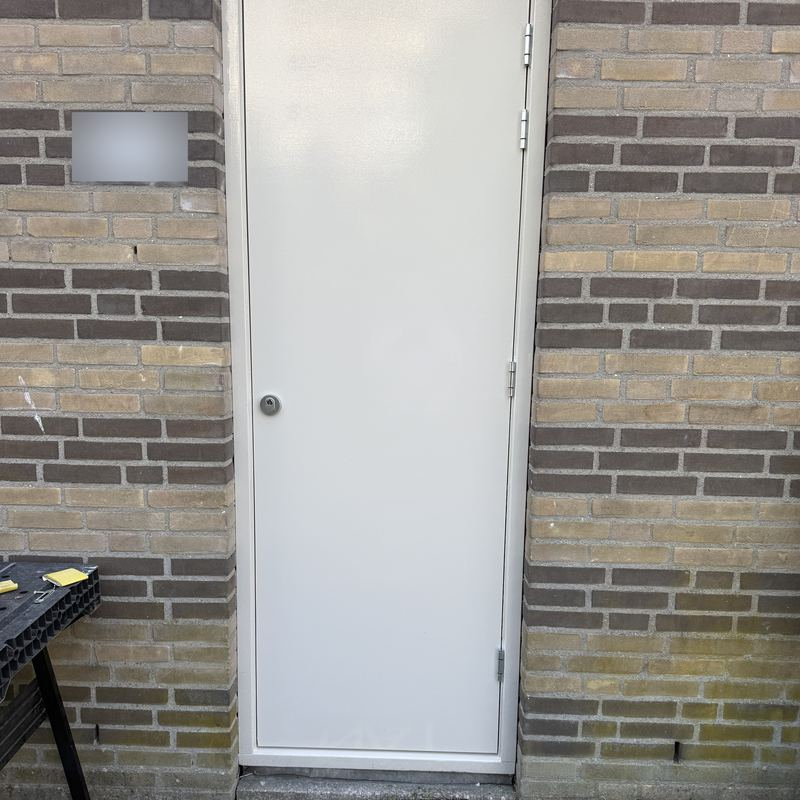
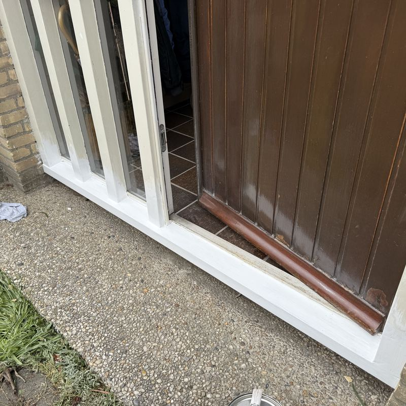
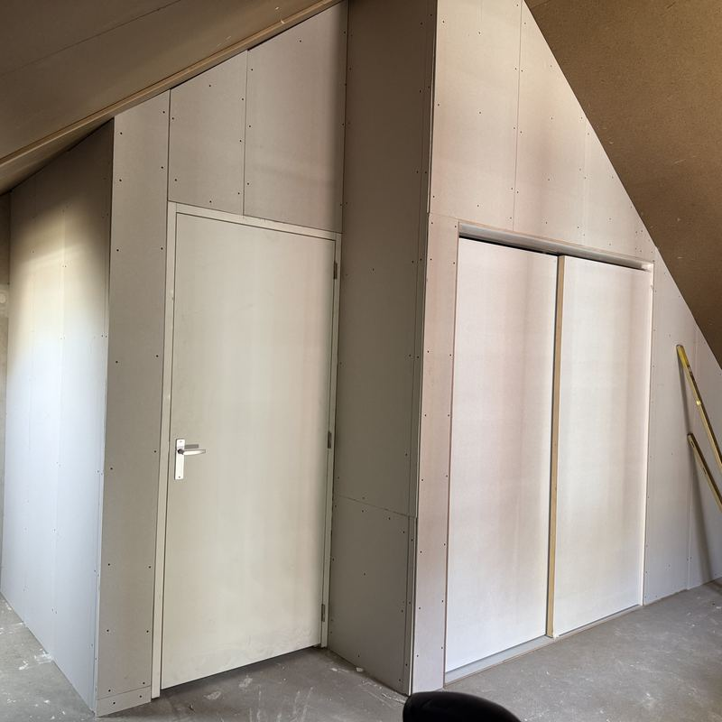

Timmerwerken in Voorne aan Zee
Vakkundig timmerwerk aan uw woning
Van een rot kozijn tot een complete nieuwe gevelbekleding: ATO Advies & Onderhoud lost het netjes en snel op. Gediplomeerd, verzekerd en altijd met een vrijblijvende offerte.
Gediplomeerd en verzekerd
Vakwerk van een gediplomeerd timmerman, volledig verzekerd.
Snelle service
Korte lijnen en snel een afspraak.
Vrijblijvende offerte
U weet vooraf waar u aan toe bent.
Lokaal
Voorne aan Zee, Spijkenisse en Ouddorp.
Wat wij doen
Timmerwerk aan en om het huis, groot en klein.
Ramen en deuren vervangen
Nieuwe ramen, deuren of complete kozijnen, netjes op maat geplaatst.
Gevelbekleding
Uw gevel opnieuw bekleed met Trespa of multiplex, strak afgewerkt.
Boeilijsten vervangen
Verweerde boeilijsten vervangen, in het materiaal dat bij uw woning past.
Houtrotherstel kozijnen
Houtrot in kozijnen vakkundig hersteld, zodat vervangen vaak niet nodig is.
Hang- en sluitwerk
Nieuwe scharnieren, sloten en deurbeslag, goed afgehangen en sluitend.
Overig timmerwerk
Een andere klus? Bel gerust, we denken graag mee.
Eerlijk advies en netjes werk
U krijgt eerst eerlijk advies over wat er echt nodig is: herstellen als het kan, vervangen als het moet. Daarna voeren we het werk netjes en zonder gedoe uit.
- Gediplomeerd en verzekerd
- Snelle service
- Altijd een vrijblijvende offerte

Voor en na
Schuif over de foto om het verschil te zien.


Voor NaHoutrot in een kozijnhoek: hersteld en opnieuw geschilderd.
Recent werk
Kies per klus tussen voor, tijdens en na.

Schuur met nieuwe dakrand
Boeilijsten

Houtrot naast een raam
Houtrotherstel

Nieuwe kozijnen
Ramen en deuren

Topgevel in zwart hout
Gevelbekleding

Achterdeur met veiligheidsslot
Hang- en sluitwerk

Luifel boven de voordeur
Boeilijsten

Onderdorpel van een deur
Houtrotherstel

Installatie op zolder weggewerkt
Overig timmerwerk

Scheidingswand in een kantoor
Overig timmerwerk
Werkgebied
Wij werken in heel Voorne aan Zee en komen ook regelmatig in Spijkenisse en Ouddorp. Woont u net daarbuiten? Bel gerust om te overleggen.
- Voorne aan Zee
- Spijkenisse
- Ouddorp
Onder meer Brielle, Hellevoetsluis, Oostvoorne en Rockanje.
Vraag een vrijblijvende offerte aan
Bel of stuur een WhatsApp-bericht, het liefst met een paar foto's van de klus. Dan weet u snel waar u aan toe bent.